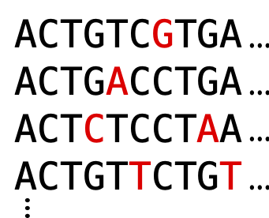
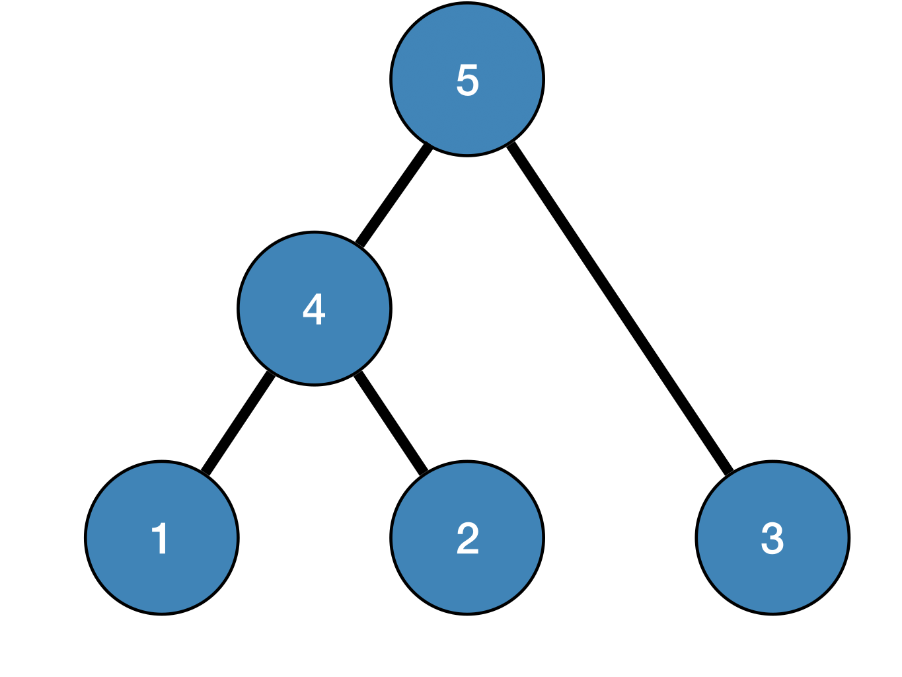
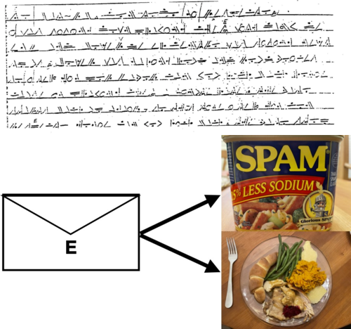
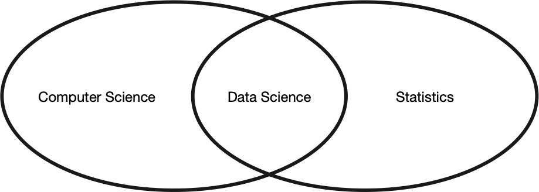
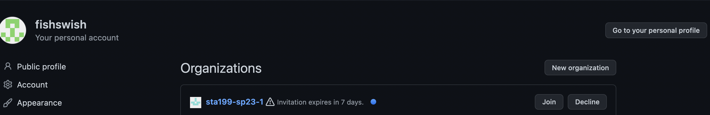

Welcome to STA 199
Meet the professor
- Alexander Fisher
- alexander.fisher@duke.edu
- Office hours: Wednesday 1:30-3:30pm in Old Chem 207
- A little bit about my research…


Why data science?
Data science turns data into knowledge.
Examples

Course overview

No programming experience required.
Learning objectives
By the end of this course you will be able to…
- learn to explore, visualize, and analyze data in a reproducible manner
- gain experience in data wrangling and munging, exploratory data analysis, predictive modeling, and data visualization
- work on problems and case studies inspired by and based on real-world questions and data
- learn to effectively communicate results through written assignments and project presentation
- develop your own question about a data set of your choosing and use techniques from this class to answer the question
Assessments
- Prepare: short videos, reading assignments, and lectures.
- Practice: application exercises
- Perform: labs, homework, exams, and the project.
| Category | Percentage |
|---|---|
| Homework | 30% |
| Labs | 15% |
| Project | 15% |
| Exam 01 | 18% |
| Exam 02 | 18% |
| Application Exercises | 4% |
Course Policies
Community
Uphold the Duke Community Standard:
I will not lie, cheat, or steal in my academic endeavors;
I will conduct myself honorably in all my endeavors; and
I will act if the Standard is compromised.
Any violations in academic honesty standards as outlined in the Duke Community Standard and those specific to this course will automatically result in a 0 for the assignment and will be reported to the Office of Student Conduct for further action.
Learning environment
- Create a learning environment that is welcoming, inclusive, and accessible to everyone.
- Respect and honor each other.
Team work policy
The final project and several labs will be completed in teams. All group members are expected to participate equally. Commit history may be used to give individual team members different grades. Your grade may differ from the rest of your group.
Late policy
Homeworks and labs can be turned in within 72 hours of the deadline for grade penalty (5% off per day).
Exams and the final project cannot be turned in late and can only be excused under exceptional circumstances.
The Duke policy for illness requires a short-term illness report or a letter from the Dean; except in emergencies, all other absenteeism must be approved in advance (e.g., an athlete who must miss class may be excused by prior arrangement for specific days). For emergencies, email notification is needed at the first reasonable time.
All exemptions will be handled by course coordinator, Ed Tam, at sta199@duke.edu
Last minute coding/rendering issues will not be granted extensions.
Course toolkit
- course website: https://sta199-sp23-1.github.io/
- course organization (on GitHub): https://github.com/sta199-sp23-1
- slack: https://sta199-sp23-001.slack.com
Communication and missing class
If you have questions about homework/lab exercises, debugging, or any question about course materials
- come to office hours
- post to a public channel in slack.
When you need help debugging, it is essential you provide a reproducible example of the code that caused the error. Screenshots, or pasting a short snippet of the offending code is helpful!
The teaching team will not debug via email.
When you miss a class:
- watch the recorded lecture on Sakai
- come to office hours or post in a public channel of slack if you have questions
Jump in
- Check your email / sakai announcements for slack invite.
- Post on slack
- Accept your course organization invite

- Don’t have an invite? Follow the lab 0 instructions to create a
lab-0-usernamerepo here.
- Demo: ae1